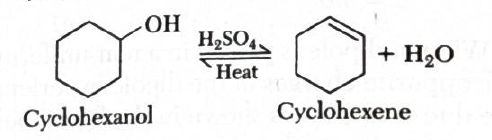
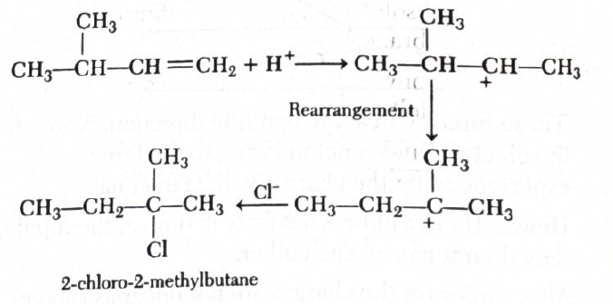
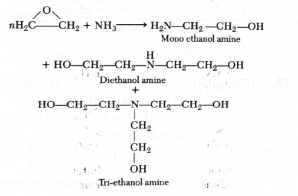
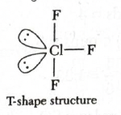
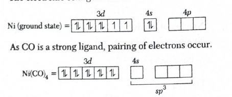
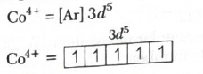
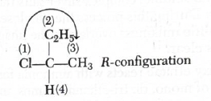

- Answer: \((a)\) \(o\)-nitrophenol
- Quick explanation: \(o\)-nitrophenol forms intramolecular hydrogen bonding, so its molecules do not associate strongly with each other. \(p\)-nitrophenol forms intermolecular hydrogen bonding, so it has stronger association and is less volatile.
-
Chapter / topic / subtopic: Alcohols, Phenols
and Ethers → Phenols Page C185
Periodicity and Bonding → Hydrogen Bond Page C37 - Volatility depends on how easily a compound can escape into vapour phase.
- If molecules are strongly associated with each other, volatility decreases.
- In \(o\)-nitrophenol, the \(-OH\) group and \(-NO_2\) group are close to each other.
- Because they are close, \(o\)-nitrophenol forms intramolecular hydrogen bonding within the same molecule.
- This reduces intermolecular association between different molecules.
- In \(p\)-nitrophenol, the \(-OH\) and \(-NO_2\) groups are far apart, so it forms intermolecular hydrogen bonding between different molecules.
- Intermolecular hydrogen bonding increases association and decreases volatility.
- Therefore, \(o\)-nitrophenol is more volatile than \(p\)-nitrophenol and \(m\)-nitrophenol.
- Final result: \(o\)-nitrophenol is the most volatile compound.
- Simple memory tip: Ortho can make an internal H-bond, so it escapes more easily.
- Why the other options are wrong: \(p\)-nitrophenol and \(m\)-nitrophenol show stronger intermolecular association than \(o\)-nitrophenol, so they are less volatile.
- Exam shortcut: For nitrophenols, \(o\)-nitrophenol is steam volatile due to intramolecular H-bonding.
- Answer: \((a)\) \(\sqrt{8}\)
- Quick explanation: Titanium has atomic number \(22\), so \(Ti^{2+}\) has configuration \(3d^2\). It has two unpaired electrons, so magnetic moment \(\mu = \sqrt{n(n+2)} = \sqrt{2(2+2)} = \sqrt{8}\ \mathrm{BM}\).
-
Chapter / topic / subtopic: d and f Block
Elements and Coordination Compounds → d-Block Elements Page
C131
Magnetic Properties Page C131 - The spin-only magnetic moment formula is:
- \(\mu = \sqrt{n(n+2)}\ \mathrm{BM}\)
- Here, \(n\) is the number of unpaired electrons.
- Atomic number of titanium is \(22\).
- Electronic configuration of neutral \(Ti\) is \([Ar]3d^2 4s^2\).
- For \(Ti^{2+}\), two electrons are removed from the \(4s\) orbital first.
- So, \(Ti^{2+}\) has electronic configuration \([Ar]3d^2\).
- The two \(d\)-electrons remain unpaired according to Hund's rule.
- Therefore, \(n=2\).
- \(\mu = \sqrt{2(2+2)} = \sqrt{8}\ \mathrm{BM}\)
- Final result: Magnetic moment of \(Ti^{2+}\) is \(\sqrt{8}\ \mathrm{BM}\).
- Simple memory tip: For \(d^2\), unpaired electrons \(=2\), so magnetic moment \(=\sqrt{8}\).
- Why the other options are wrong: \(\sqrt{10}\), \(\sqrt{6}\), and \(\sqrt{9}\) do not match the spin-only formula for two unpaired electrons.
- Exam shortcut: First find \(d\)-electron count, then use \(\mu=\sqrt{n(n+2)}\).
- Answer: \((a)\) Large size
- Quick explanation: Xenon is larger in size than lighter noble gases, so its outer electrons are held less tightly by the nucleus. Fluorine is highly electronegative and can oxidise xenon to form xenon fluorides.
-
Chapter / topic / subtopic: p-Block Elements →
Group 18 Elements Page C127
Noble gases → Compounds of xenon Page C128 - Noble gases are generally unreactive because they have complete valence shells.
- Lighter noble gases like helium, neon, and argon have very small size and very high ionisation enthalpy.
- Their electrons are held very tightly, so they do not easily form compounds.
- Xenon is much larger in size.
- Due to larger atomic radius, the attraction between the nucleus and outer electrons becomes weaker.
- Therefore, xenon can be oxidised more easily than lighter noble gases.
- Fluorine is a very strong oxidising and highly electronegative element, so it forms compounds with xenon such as \(XeF_2\), \(XeF_4\), and \(XeF_6\).
- Final result: Xenon forms compounds with fluorine mainly because of its large size.
- Simple memory tip: Bigger noble gas means outer electrons are less tightly held; xenon is big enough for fluorine to react with it.
- Why the other options are wrong: High ionisation energy would make compound formation difficult, not easier. Low electronegativity and low electron gain enthalpy are not the direct reason tested here.
- Exam shortcut: Noble gas compounds in exams usually mean xenon fluorides because xenon is large and fluorine is highly electronegative.
- Answer: \((a)\) He
- Quick explanation: Helium has a very low boiling point, so liquid helium is used to produce extremely low temperatures. Hence, helium is used as a cryogenic agent.
-
Chapter / topic / subtopic: p-Block Elements →
Group 18 Elements Page C127
Noble gases → Uses of helium Page C128 - Cryogenic agents are substances used to produce or maintain very low temperatures.
- Helium has an extremely low boiling point.
- Because of this, liquid helium is very useful in low-temperature applications.
- It is used in cryogenics, superconducting magnets, and very low temperature research.
- Among the given noble gases, helium is the best cryogenic agent.
- Final result: The inert gas used as cryogenic agent is helium.
- Simple memory tip: Helium stays liquid only at extremely low temperature, so it is perfect for cryogenics.
- Why the other options are wrong: Neon, argon, and krypton are noble gases, but helium is specifically known for its very low boiling point and cryogenic use.
- Exam shortcut: Cryogenic agent among noble gases = helium.
- Answer: \((c)\) \(\dfrac{1}{3}\dfrac{d[C]}{dt}\) and \((d)\) \(\dfrac{1}{4}\dfrac{d[D]}{dt}\)
- Quick explanation: Rate of reaction is written by dividing the rate of change of each substance by its stoichiometric coefficient. Reactants get a negative sign because they are consumed, while products get a positive sign because they are formed.
-
Chapter / topic / subtopic: Chemical Kinetics →
Rate of Reaction Page C79
Expression for rate of reaction Page C79 - Given reaction:
- \(2A + 3B \rightarrow 3C + 4D\)
- General rate expression for this reaction is:
- \(r = -\dfrac{1}{2}\dfrac{d[A]}{dt} = -\dfrac{1}{3}\dfrac{d[B]}{dt} = \dfrac{1}{3}\dfrac{d[C]}{dt} = \dfrac{1}{4}\dfrac{d[D]}{dt}\)
- \(A\) and \(B\) are reactants, so their concentrations decrease with time. Hence, their terms must have negative signs.
- \(C\) and \(D\) are products, so their concentrations increase with time. Hence, their terms are positive.
- Option \((c)\) is correct because \(C\) has coefficient \(3\), so rate contribution is \(\dfrac{1}{3}\dfrac{d[C]}{dt}\).
- Option \((d)\) is also correct because \(D\) has coefficient \(4\), so rate contribution is \(\dfrac{1}{4}\dfrac{d[D]}{dt}\).
- Final result: Correct rate expressions among the options are \((c)\) and \((d)\).
- Simple memory tip: Divide by coefficient; put minus sign for reactants and plus sign for products.
- Why the other options are wrong: Option \((a)\) misses both the coefficient \(2\) and the negative sign. Option \((b)\) uses the wrong coefficient and also misses the negative sign for reactant \(B\).
- Exam shortcut: Products are easiest here because they need no minus sign; just divide by their coefficients.
- Answer: \((a)\) cyclohexene
- Quick explanation: Concentrated \(H_2SO_4\) and heat dehydrate alcohols. Cyclohexanol loses one molecule of water to form cyclohexene.
-
Chapter / topic / subtopic: Alcohols, Phenols
and Ethers → Alcohols Page C184
Dehydration of alcohols Page C185
Preparation of alkenes from alcohols Page C165 - Cyclohexanol is a cyclic alcohol containing an \(-OH\) group.
- \(H_2SO_4\) acts as a dehydrating agent.
- On heating, cyclohexanol loses \(H_2O\).
- Removal of \(H\) and \(OH\) from neighbouring carbon atoms forms a double bond in the ring.
- Therefore, cyclohexanol gives cyclohexene.
-

- Reaction:
- \(cyclohexanol \xrightarrow[\Delta]{H_2SO_4} cyclohexene + H_2O\)
- Final result: The product is cyclohexene.
- Simple memory tip: Alcohol \(+\ H_2SO_4/heat\) means remove water and make alkene.
- Why the other options are wrong: Cyclohexanone would require oxidation, not simple dehydration. Cyclohexanol is the reactant, not the product. So “None of these” is also incorrect.
- Exam shortcut: \(H_2SO_4 + heat\) with alcohol usually signals dehydration to alkene.
- Answer: \((a)\) 2-chloro-2-methylbutane
- Quick explanation: Addition of \(HCl\) to 3-methylbutene first forms a carbocation. The initially formed carbocation rearranges to a more stable tertiary carbocation, and then \(Cl^-\) attacks to give 2-chloro-2-methylbutane as the major product.
-
Chapter / topic / subtopic: Organic Chemistry -
Some Basic Principles, Techniques and Hydrocarbons → Alkenes
Page C165
Electrophilic addition reactions Page C165
Carbocation stability and rearrangement Page C153 / C165 - 3-methylbutene has the structure \(CH_3-CH(CH_3)-CH=CH_2\).
- In addition of \(HCl\), \(H^+\) adds first to the double bond.
- This gives a carbocation intermediate.
- The initially formed carbocation can rearrange to a more stable tertiary carbocation.
- Tertiary carbocations are more stable than secondary and primary carbocations.
- After rearrangement, \(Cl^-\) attacks the tertiary carbocation.
- The final major product is 2-chloro-2-methylbutane.
-

- Final result: Major product is 2-chloro-2-methylbutane.
- Simple memory tip: In alkene addition, carbocation rearrangement happens if it can make a more stable carbocation.
- Why the other options are wrong: They correspond to unrearranged or less stable carbocation pathways. The major product comes from the more stable tertiary carbocation.
- Exam shortcut: If addition creates a carbocation near a carbon that can shift to become tertiary, expect rearrangement before halide attack.
- Answer: \((a)\) \(3s\)
- Quick explanation: For hydrogen-like species, energy is proportional to \(\dfrac{Z^2}{n^2}\). Hydrogen has \(Z=1,\ n=1\), while \(Li^{2+}\) has \(Z=3\), so equal energy requires \(\dfrac{1^2}{1^2}=\dfrac{3^2}{n^2}\), giving \(n=3\). For angular momentum to match \(1s\), the orbital must also be \(s\), so the answer is \(3s\).
-
Chapter / topic / subtopic: Atomic Structure →
Bohr's Model of an Atom Page C20
Energy of electron in the nth orbit Page C20
Quantization of angular momentum Page C20 - For hydrogen-like atoms or ions, energy depends on:
- \(E \propto \dfrac{Z^2}{n^2}\)
- For hydrogen \(1s\), \(Z_H=1\) and \(n_H=1\).
- For \(Li^{2+}\), \(Z_{Li}=3\).
- For same energy:
- \(\dfrac{Z_H^2}{n_H^2} = \dfrac{Z_{Li}^2}{n_{Li}^2}\)
- \(\dfrac{1^2}{1^2} = \dfrac{3^2}{n_{Li}^2}\)
- \(n_{Li}^2 = 9\), so \(n_{Li}=3\).
- The angular momentum condition also matches the \(s\)-type option. Among orbitals with \(n=3\), \(3s\) is the suitable answer.
-

- Final result: The required orbital is \(3s\).
- Simple memory tip: For hydrogen-like species, same energy means same value of \(Z/n\).
- Why the other options are wrong: \(4s\) has wrong \(n\). \(2p\) has wrong \(n\) and wrong orbital type. \(3d\) has \(n=3\), but it does not match the \(1s\)-orbital angular momentum condition.
- Exam shortcut: Hydrogen \(1s\) has \(Z/n=1\). For \(Li^{2+}\), \(Z=3\), so \(n\) must be \(3\); then choose \(3s\).
- Answer: \((a)\) \([Na(NH_3)_4]I\)
- Quick explanation: Sodium iodide reacts with ammonia in liquid ammonia medium to form tetraamminesodium iodide. Four ammonia molecules coordinate with sodium, giving \([Na(NH_3)_4]^+\), while iodide remains as the counter ion.
- Chapter / topic / subtopic: Hydrogen and s-Block Elements → s-Block Elements → Sodium compounds and reactions in liquid ammonia, Pages C100-C101
- The reaction given in the solution is: \(NaI + 4NH_3 \longrightarrow [Na(NH_3)_4]I\).
- Here \(NH_3\) acts like a ligand and attaches around the sodium ion. Since four ammonia molecules are attached, the complex part becomes \([Na(NH_3)_4]^+\).
- The iodide ion \(I^-\) remains outside the coordination sphere, so the full compound is written as \([Na(NH_3)_4]I\).
- Final result: Sodium iodide reacts with ammonia to give tetraamminesodium iodide, \([Na(NH_3)_4]I\).
- Simple memory tip: In liquid ammonia, sodium ion can get surrounded by ammonia molecules. “Tetraammine” means four \(NH_3\) groups.
- Why the other options are wrong: Options (b), (c), and (d) give incorrect combinations of ammonia and iodide around sodium. The standard product shown is \([Na(NH_3)_4]I\).
- Exam shortcut: If the reaction is \(NaI + NH_3\) in liquid ammonia, remember the direct product as \([Na(NH_3)_4]I\).
- Answer: \((d)\) Both (a) and (b)
- Quick explanation: Sodium thiosulphate and ammonium thiosulphate are both used as fixing agents in photography. They dissolve unreacted silver halides by forming soluble silver complexes.
-
Chapter / topic / subtopic: p-Block Elements
→ Group 16 Elements → Thiosulphates and their uses,
Page C118
Chemistry in Everyday Life / Applied Chemistry → Photography chemicals, Page C229 - In photographic film, the image is formed using silver halides such as \(AgBr\) and \(AgCl\).
- After exposure, some silver halide remains unreacted. If it is not removed, the image will not become clear and stable.
- Sodium thiosulphate or ammonium thiosulphate reacts with these silver halides and forms soluble complex silver salts.
- Because these soluble complexes dissolve in the fixer solution, the milky silver halide layer is removed and the image becomes clear.
- Final result: Both sodium thiosulphate and ammonium thiosulphate are used as fixing agents in photography.
- Simple memory tip: “Hypo” or thiosulphate fixes the photo by removing extra silver halide.
- Why the other options are wrong: Sodium thiosulphate alone is correct but incomplete. Ammonium thiosulphate alone is also correct but incomplete. Sodium chloride is not the fixing agent.
- Exam shortcut: Photography fixer = thiosulphate. If both sodium and ammonium thiosulphate are listed, choose “Both”.
- Answer: \((d)\) All of these
- Quick explanation: Epoxy ethane reacts with ammonia in the presence of water to give a mixture of ethanolamines. The products include monoethanolamine, diethanolamine, and triethanolamine.
-
Chapter / topic / subtopic: Alcohols, Phenols
and Ethers → Ethers / Epoxides → Ring opening
reactions of epoxides, Page C187
Amines → Preparation and reactions of amines, Page C207 -

- Epoxy ethane has a three-membered ring containing oxygen. This ring is strained, so it opens easily during reactions.
- Ammonia \(NH_3\) attacks epoxy ethane and opens the ring. This gives monoethanolamine first.
- The monoethanolamine still has nitrogen with available lone pair character, so it can react further with more epoxy ethane to form diethanolamine.
- Further reaction can give triethanolamine. Therefore, the reaction gives a mixture of mono-, di-, and triethanolamines.
- Final result: Epoxy ethane with \(NH_3\) and \(H_2O\) gives monoethanolamine, diethanolamine, and triethanolamine.
- Simple memory tip: Epoxide ring opens easily. Ammonia can add one, two, or three ethanol groups, so all three ethanolamines can form.
- Why the other options are wrong: Options (a), (b), and (c) are individually correct products, but the question asks the compound formed in the reaction mixture. Since all three are formed, the best answer is “All of these”.
- Exam shortcut: Epoxy ethane \(+\ NH_3\) usually gives a mixture of ethanolamines; if “All of these” is present, it is likely the answer.
- Answer: \((b)\) dialysis
- Quick explanation: Dialysis removes excess electrolyte from a colloidal solution by diffusion through a suitable membrane. Colloidal particles cannot pass through the membrane, but small ions can pass out.
- Chapter / topic / subtopic: Surface Chemistry → Colloids → Purification of colloidal solutions / Dialysis, Pages C75-C76
- A colloidal solution may contain extra ions or electrolytes after preparation. These small ions must be removed to purify the colloid.
- In dialysis, the colloidal solution is placed inside a suitable membrane. Small electrolyte ions diffuse out through the membrane into water.
- The larger colloidal particles cannot pass through the membrane, so they remain inside.
- Final result: The removal of excess electrolyte from a colloidal solution is called dialysis.
- Simple memory tip: Dialysis means “small particles go out, large colloid particles stay in”.
- Why the other options are wrong: Coagulation means settling of colloidal particles. Ultra-filtration separates colloidal particles using special filters. Peptisation converts a precipitate into a colloidal sol.
- Exam shortcut: Whenever the question says “removal of excess electrolyte from colloid”, directly choose dialysis.
- Answer: \((a)\) glucose
- Quick explanation: Maltase is the enzyme that hydrolyses maltose. Maltose breaks into two glucose molecules.
- Chapter / topic / subtopic: Biological, Industrial and Environmental Chemistry → Biomolecules → Carbohydrates / Disaccharides, Pages C221-C222
- Maltose is a disaccharide, meaning it is made from two monosaccharide units.
- When maltose undergoes hydrolysis in the presence of the enzyme maltase, the glycosidic bond breaks.
- The products formed are two glucose molecules: maltose \(\xrightarrow{\text{maltase, hydrolysis}}\) glucose \(+\) glucose.
- Final result: Maltase converts maltose into glucose.
- Simple memory tip: Maltase acts on maltose, and maltose gives glucose \(+\) glucose.
- Why the other options are wrong: Sucrose is another disaccharide, fructose is not the product of maltose hydrolysis, and starch is a polysaccharide, not the product formed here.
- Exam shortcut: Enzyme ending in “-ase” usually acts on a similar-sounding substrate: maltase acts on maltose.
- Answer: \((a)\) glucose
- Quick explanation: Starch is a polysaccharide made of many glucose units. It contains amylose and amylopectin, both made from \(\alpha\)-glucose units.
- Chapter / topic / subtopic: Biological, Industrial and Environmental Chemistry → Biomolecules → Carbohydrates / Polysaccharides / Starch, Pages C221-C222
- Starch is a natural polymer found in plants. It is used by plants as a storage carbohydrate.
- The repeating unit of starch is glucose, specifically \(\alpha\)-glucose or glucopyranose units.
- Starch is mainly a mixture of amylose and amylopectin. Both are made from glucose units, but their structures are different.
- Amylose is mostly linear, while amylopectin is branched.
- Final result: Starch is a polymer of glucose.
- Simple memory tip: Starch, cellulose, and glycogen are all glucose-based polysaccharides.
- Why the other options are wrong: Fructose is not the repeating unit of starch. Since starch is made only of glucose units, “Both (a) and (b)” and “None of these” are wrong.
- Exam shortcut: Whenever the question asks “starch is a polymer of”, directly choose glucose.
- Answer: \((c)\) Sodium hydroxide and iodine
- Quick explanation: Sodium hydroxide and iodine are used in the iodoform test. Ethyl alcohol gives a yellow precipitate of iodoform, but methyl alcohol does not.
- Chapter / topic / subtopic: Alcohols, Phenols and Ethers → Alcohols → Iodoform test / Distinction between methyl alcohol and ethyl alcohol, Pages C184-C185
-

- The iodoform test is given by compounds containing the group \(CH_3CO-\), or compounds that can be oxidised to that group.
- Ethyl alcohol, \(C_2H_5OH\), can be oxidised to acetaldehyde, \(CH_3CHO\), which gives the iodoform test.
- So ethyl alcohol reacts with \(I_2/NaOH\) to give \(CHI_3\), a yellow precipitate.
- Methyl alcohol, \(CH_3OH\), does not give the iodoform test, so no yellow precipitate is formed.
- Final result: Methyl alcohol and ethyl alcohol can be distinguished using sodium hydroxide and iodine.
- Simple memory tip: Ethyl alcohol gives yellow iodoform; methyl alcohol does not.
- Why the other options are wrong: Fehling solution and Schiff's reagent are mainly used for aldehyde-related tests. Phthalein fusion test is associated with phenols, not this distinction.
- Exam shortcut: To distinguish methanol and ethanol, look for iodoform test: \(I_2 + NaOH\), yellow \(CHI_3\) with ethanol only.
- Answer: \((a)\) anionic soap
- Quick explanation: Sodium stearate is a soap, and its active cleansing part is the negatively charged stearate ion \(C_{17}H_{35}COO^-\). Therefore, it is an anionic soap.
- Chapter / topic / subtopic: Biological, Industrial and Environmental Chemistry → Chemistry in Everyday Life → Soaps and detergents / Cleansing action of soaps, Pages C228-C230
- Sodium stearate is the sodium salt of stearic acid.
- Its formula is \(C_{17}H_{35}COO^-Na^+\). The sodium ion is \(Na^+\), and the stearate ion is \(C_{17}H_{35}COO^-\).
- The cleansing action is mainly due to the anionic part, \(C_{17}H_{35}COO^-\).
- Since the active part is negatively charged, sodium stearate is called an anionic soap.
- Final result: Sodium stearate is an anionic soap.
- Simple memory tip: Sodium or potassium salts of fatty acids are soaps. If the active part has a negative charge, it is anionic.
- Why the other options are wrong: It is not a cationic detergent because the cleansing part is not positively charged. It is not an anionic detergent because sodium stearate is a soap, not a synthetic detergent. It is not non-ionic because it contains ions.
- Exam shortcut: \(RCOO^-Na^+\) type compounds are soaps; the \(RCOO^-\) part makes them anionic soaps.
- Answer: \((b)\) \(BaF_2\)
- Quick explanation: Anti-fluorite structures are usually of \(A_2B\) type, like \(Li_2O\), \(K_2O\), and \(Rb_2S\). \(BaF_2\) is of \(AB_2\) type, so it has fluorite-type structure, not anti-fluorite structure.
- Chapter / topic / subtopic: Solid State → Ionic crystals → Fluorite and anti-fluorite structures, Pages C89-C91
- Fluorite structure is represented by \(CaF_2\)-type compounds. These are generally \(AB_2\) type compounds.
- Anti-fluorite structure is the reverse arrangement of fluorite and is generally shown by \(A_2B\) type compounds.
- \(Li_2O\), \(K_2O\), and \(Rb_2S\) are \(A_2B\)-type compounds, so they can show anti-fluorite structure.
- \(BaF_2\) is \(AB_2\)-type, similar to \(CaF_2\), so it is a fluorite structure, not anti-fluorite.
- Final result: \(BaF_2\) is not an anti-fluorite structure.
- Simple memory tip: Fluorite = \(AB_2\); anti-fluorite = \(A_2B\).
- Why the other options are wrong: \(Rb_2S\), \(K_2O\), and \(Li_2O\) are all \(A_2B\)-type compounds, so they match anti-fluorite structure.
- Exam shortcut: In such questions, first check the formula type. \(AB_2\) points to fluorite, while \(A_2B\) points to anti-fluorite.
- Answer: \((a)\) T-shape
- Quick explanation: In \(ClF_3\), chlorine has three bond pairs and two lone pairs. The electron-pair geometry is trigonal bipyramidal, but because two lone pairs occupy equatorial positions, the molecular shape becomes T-shaped.
-
Chapter / topic / subtopic: Chemical Bonding
and Molecular Structure → VSEPR theory → Shapes with
lone pairs, Pages C37-C39
p-Block Elements → Group 17 Elements → Interhalogen compounds, Pages C123-C124 -

- Chlorine has \(7\) valence electrons. In \(ClF_3\), it forms three \(Cl-F\) bonds with three fluorine atoms.
- After forming three bonds, chlorine still has two lone pairs.
- So around chlorine, there are \(3\) bond pairs \(+\ 2\) lone pairs \(=\ 5\) electron pairs.
- Five electron pairs arrange themselves in trigonal bipyramidal electron geometry. The two lone pairs occupy equatorial positions to reduce repulsion.
- After ignoring the lone pairs and looking only at the three fluorine atoms, the visible molecular shape is T-shaped.
- Final result: \(ClF_3\) has T-shaped structure.
- Simple memory tip: \(ClF_3\): \(3\) bonds \(+\ 2\) lone pairs = T-shape.
- Why the other options are wrong: Bent shape usually comes from two bond pairs with lone pairs. Linear has atoms in one straight line. Trigonal planar needs three bond pairs and no lone pair on the central atom.
- Exam shortcut: For \(AX_3E_2\)-type molecules, remember the shape as T-shaped.
- Answer: \((b)\) \(O_2^{2-}\)
- Quick explanation: A species is diamagnetic when it has no unpaired electrons. \(O_2^{2-}\) has all electrons paired, so it is diamagnetic.
- Chapter / topic / subtopic: Chemical Bonding and Molecular Structure → Molecular orbital theory → Magnetic nature of molecules and ions, Pages C39-C41
- Diamagnetic species have all electrons paired. Paramagnetic species have one or more unpaired electrons.
- \(O_2\) has two unpaired electrons in antibonding \(\pi^*\) orbitals, so it is paramagnetic.
- \(O_2^{2-}\) has two extra electrons compared to \(O_2\). These extra electrons pair up the unpaired electrons in the \(\pi^*\) orbitals.
- Therefore, \(O_2^{2-}\) has no unpaired electrons and is diamagnetic.
- \(N_2^{2+}\) and \(B_2\) have unpaired electrons according to the given molecular orbital filling, so they are not diamagnetic.
- Final result: \(O_2^{2-}\) is diamagnetic in nature.
- Simple memory tip: \(O_2\) is paramagnetic, but peroxide ion \(O_2^{2-}\) is diamagnetic because the two extra electrons pair up.
- Why the other options are wrong: \(O_2\), \(N_2^{2+}\), and \(B_2\) have unpaired electrons, so they are paramagnetic.
- Exam shortcut: For magnetic nature, do not only count total electrons. Check whether the final MO filling leaves any unpaired electrons.
- Answer: \((c)\) \(SO_2 = SO_3 > SO_4^{2-} > SO_3^{2-}\)
- Quick explanation: Average bond order is found by dividing the total number of bonds by the number of \(S-O\) groups. \(SO_2\) and \(SO_3\) both have average bond order \(2\), \(SO_4^{2-}\) has \(1.5\), and \(SO_3^{2-}\) has about \(1.33\).
-
Chapter / topic / subtopic: Chemical Bonding
and Molecular Structure → Resonance and bond order, Pages
C35-C38
p-Block Elements → Group 16 Elements → Oxides and oxyanions of sulphur, Pages C116-C118 -

- The useful shortcut here is: bond order \(=\dfrac{\text{total number of bonds}}{\text{number of }S-O\text{ groups}}\).
- For \(SO_2\), the structure has two \(S=O\) bonds. Total number of bonds \(=4\), number of \(S-O\) groups \(=2\), so bond order \(=\dfrac{4}{2}=2\).
- For \(SO_3\), the structure has three \(S=O\) bonds. Total number of bonds \(=6\), number of \(S-O\) groups \(=3\), so bond order \(=\dfrac{6}{3}=2\).
- For \(SO_4^{2-}\), the structure has total number of bonds \(=6\) over four \(S-O\) groups, so bond order \(=\dfrac{6}{4}=1.5\).
- For \(SO_3^{2-}\), the structure has total number of bonds \(=4\) over three \(S-O\) groups, so bond order \(=\dfrac{4}{3}=1.33\).
- Therefore, the order is: \(SO_2 = SO_3 > SO_4^{2-} > SO_3^{2-}\).
- Final result: \(SO_2 = SO_3 > SO_4^{2-} > SO_3^{2-}\).
- Simple memory tip: More double-bond character means higher bond order. More negative charge spread over oxygens usually lowers average bond order.
- Why the other options are wrong: Options (a) and (b) put the negatively charged oxyanions too high. Option (d) is wrong because the order can be calculated using average bond order.
- Exam shortcut: Count total bond lines, treating a double bond as \(2\), then divide by number of \(S-O\) bonds.
- Answer: \((b)\) \(-1\)
- Quick explanation: For a hydrogen-like atom, the energy is inversely proportional to the radius of the orbit. So \(E \propto \dfrac{1}{r}\), which means \(E \propto r^{-1}\).
- Chapter / topic / subtopic: Atomic Structure → Bohr's model of an atom → Energy of electron and radius of orbit, Page C20
- The given relation is that ionisation energy is proportional to \(r^n\).
- For a hydrogen-like species, the energy expression can be written in the form: \(E = \dfrac{-kZe^2}{2r}\).
- Here \(Z\), \(e\), and \(k\) are constants for the comparison, so the main dependence is on \(r\).
- Therefore, \(E \propto \dfrac{1}{r}\), or \(E \propto r^{-1}\).
- Comparing with \(E \propto r^n\), we get \(n = -1\).
- Final result: \(n = -1\).
- Simple memory tip: In Bohr model, smaller orbit means electron is more tightly held, so ionisation energy is larger. That means energy varies inversely with radius.
- Why the other options are wrong: \(n = 1\) would mean energy increases directly with radius, which is opposite. \(n = 2\) and \(n = -2\) do not match the given Bohr energy-radius relation.
- Exam shortcut: If the formula contains \(1/r\), immediately convert it to \(r^{-1}\).
- Answer: \((a)\) prevent oxidation
- Quick explanation: BHA is an antioxidant used in food preservation. It slows down oxidation of food materials, especially fats and oils.
- Chapter / topic / subtopic: Biological, Industrial and Environmental Chemistry → Chemistry in Everyday Life → Food preservatives / Antioxidants, Pages C228-C229
- BHA stands for butylated hydroxy anisole.
- It is used in the food industry as an antioxidant.
- Oxidation by oxygen can spoil food, especially oily or fatty food, by causing rancidity.
- BHA reacts more readily with oxygen than the food material does, so it protects the food from oxidation.
- Final result: BHA prevents oxidation.
- Simple memory tip: BHA = antioxidant = anti-oxidation.
- Why the other options are wrong: BHA does not prevent reduction, and it is not used as a sweetener.
- Exam shortcut: Food industry BHA/BHT questions usually point to antioxidants and prevention of rancidity.
- Answer: \((c)\) charge transfer from ligand to metal
- Quick explanation: \(MnO_4^-\) has \(Mn^{+7}\), so manganese has \(d^0\) configuration and cannot show \(d-d\) transition. Its purple colour is due to ligand-to-metal charge transfer from oxygen to manganese.
- Chapter / topic / subtopic: d- and f-Block Elements → Transition elements → Colour of transition metal ions / Charge transfer, Pages C130-C133
- Normally, many transition metal ions are coloured because of \(d-d\) transitions.
- But \(d-d\) transition needs partially filled \(d\)-orbitals.
- In \(MnO_4^-\), manganese is in \(+7\) oxidation state. Its configuration becomes \(d^0\), meaning there are no \(d\)-electrons available for \(d-d\) transition.
- The colour therefore comes from charge transfer, not from \(d-d\) transition.
- In permanganate ion, electron density is transferred from the oxygen ligand to the manganese metal centre. This is ligand-to-metal charge transfer.
- Final result: The dark purple colour of \(MnO_4^-\) is due to charge transfer from ligand to metal.
- Simple memory tip: \(d^0\) or \(d^{10}\) ions cannot show normal \(d-d\) colour. If still coloured, think charge transfer.
- Why the other options are wrong: \(d-d\) transition is not possible because \(Mn^{+7}\) is \(d^0\). Metal-to-ligand charge transfer is not the correct direction here. So “All of the above” is also wrong.
- Exam shortcut: For \(MnO_4^-\), remember: purple colour = oxygen ligand to manganese charge transfer.
- Answer: \((c)\) Both (a) and (b)
- Quick explanation: Rutherford's model explained the presence of a small positively charged nucleus, but it could not explain how electrons are arranged around the nucleus. It also could not explain why revolving electrons do not lose energy and fall into the nucleus.
- Chapter / topic / subtopic: Atomic Structure → Atomic Model → Rutherford's model of atom / Limitations of Rutherford's model, Page C19
- Rutherford proposed that an atom has a tiny, dense, positively charged nucleus and electrons revolve around it.
- But according to classical electromagnetic theory, a charged particle moving in a circular path should continuously radiate energy.
- So, if an electron keeps revolving around the nucleus, it should lose energy, spiral inward, and finally fall into the nucleus.
- This would make the atom unstable, but real atoms are stable. Hence Rutherford's model could not explain the stability of atom.
- Rutherford's model also did not give proper rules for arrangement of electrons in shells or energy levels, so it could not explain the electronic structure of atom.
- Final result: Rutherford model could not explain both electronic structure and stability of an atom.
- Simple memory tip: Rutherford found the nucleus, but Bohr had to explain stable orbits and energy levels.
- Why the other options are wrong: Options (a) and (b) are individually true, but incomplete because Rutherford's model failed to explain both points. So option (c) is the best answer.
- Exam shortcut: Limitation of Rutherford model = no stability explanation + no electronic structure explanation.
- Answer: \((a)\) Hybridisation of Ni is \(sp^3\)
- Quick explanation: In \([Ni(CO)_4]\), nickel is in zero oxidation state. CO is a strong ligand, so electrons pair up and the complex becomes \(sp^3\)-hybridised, tetrahedral, and diamagnetic.
- Chapter / topic / subtopic: Coordination Compounds → Valence Bond Theory → Hybridisation, geometry and magnetic nature of complexes, Pages C136-C139
-

- In \([Ni(CO)_4]\), carbon monoxide \(CO\) is a neutral ligand.
- Therefore, oxidation state of Ni is \(0\).
- Nickel in ground state has electronic configuration \(3d^8 4s^2\).
- Since \(CO\) is a strong field ligand, pairing of electrons takes place.
- After pairing, Ni uses one \(4s\) orbital and three \(4p\) orbitals for hybridisation, giving \(sp^3\) hybridisation.
- The geometry of an \(sp^3\)-hybridised complex is tetrahedral.
- Since there are no unpaired electrons after pairing, \([Ni(CO)_4]\) is diamagnetic.
- Final result: \([Ni(CO)_4]\) has \(sp^3\) hybridisation.
- Simple memory tip: \(Ni(CO)_4\) = tetrahedral, \(sp^3\), diamagnetic. \(CO\) is strong ligand.
- Why the other options are wrong: \(dsp^2\) and square planar are not correct for \([Ni(CO)_4]\). It is not paramagnetic because it has no unpaired electrons.
- Exam shortcut: Memorise the common pair: \([Ni(CO)_4]\) is \(sp^3\) tetrahedral, while \([Ni(CN)_4]^{2-}\) is \(dsp^2\) square planar.
- Answer: \((a)\) \(JK^{-1}\)
- Quick explanation: Boltzmann's constant relates energy with temperature. Since energy is measured in joule and temperature in kelvin, its SI unit is joule per kelvin, \(JK^{-1}\).
- Chapter / topic / subtopic: States of Matter → Fundamental constants and kinetic theory → Boltzmann's constant, Pages C1-C3
- Boltzmann's constant is represented by \(k\).
- It connects microscopic particle energy with temperature.
- Since energy has SI unit joule \((J)\) and temperature has SI unit kelvin \((K)\), Boltzmann's constant has unit \(J/K\).
- \(J/K\) is the same as \(JK^{-1}\).
- Final result: SI unit of Boltzmann's constant is \(JK^{-1}\).
- Simple memory tip: Boltzmann constant = energy per temperature = joule per kelvin.
- Why the other options are wrong: \(eVK^{-1}\) is not the SI unit because electron volt is not the SI unit of energy. \(erg\ K^{-1}\) belongs to CGS system. \(JK\) means joule multiplied by kelvin, not joule per kelvin.
- Exam shortcut: Whenever a constant connects energy and temperature, check if its unit is energy/temperature, i.e. \(JK^{-1}\).
- Answer: \((a)\) Substitution reaction
- Quick explanation: Acetone is a ketone and mainly undergoes addition and condensation-type reactions at the carbonyl group. It does not undergo substitution reaction easily because it does not have a suitable leaving group.
- Chapter / topic / subtopic: Aldehydes, Ketones and Carboxylic Acids → Ketones → Chemical reactions of acetone / Carbonyl compounds, Pages C193-C196
- Acetone is \(CH_3COCH_3\), a ketone.
- The important reactive part of acetone is the carbonyl group, \(C=O\).
- Carbonyl compounds commonly undergo nucleophilic addition reactions because the carbonyl carbon is electron deficient.
- Acetone can also undergo condensation reactions under suitable conditions.
- But substitution reaction usually needs a suitable leaving group. Acetone does not contain such a leaving group, so it does not normally undergo substitution reaction.
- Final result: Acetone does not undergo substitution reaction.
- Simple memory tip: Ketone carbonyl group attracts addition, not normal substitution.
- Why the other options are wrong: Acetone can participate in addition reactions and condensation reactions. Polymerisation-type behaviour may be possible under special conditions, but the book answer clearly identifies substitution as the reaction acetone does not undergo due to absence of a suitable leaving group.
- Exam shortcut: For acetone, if asked “does not undergo”, look for substitution because there is no good leaving group.
- Answer: \((a)\) \(\sqrt{35}\)
- Quick explanation: In \([CoF_6]^{2-}\), cobalt is in \(+4\) oxidation state. \(Co^{4+}\) has \(3d^5\) configuration, giving \(5\) unpaired electrons, so magnetic moment \(= \sqrt{n(n+2)} = \sqrt{5(5+2)} = \sqrt{35}\) BM.
-
Chapter / topic / subtopic: Coordination
Compounds → Magnetic properties of complexes →
Spin-only magnetic moment, Pages C136-C139
d- and f-Block Elements → Electronic configuration of transition metal ions, Pages C130-C132 -

- First find the oxidation state of cobalt in \([CoF_6]^{2-}\).
- Fluorine has charge \(-1\). Since there are six fluorine ligands, total ligand charge is \(-6\).
- Let oxidation state of Co be \(x\): \(x + (-1 \times 6) = -2\).
- So \(x - 6 = -2\), hence \(x = +4\).
- Therefore, cobalt is \(Co^{4+}\).
- Electronic configuration of \(Co^{4+}\) is \([Ar]3d^5\).
- \(F^-\) is a weak field ligand, so pairing is not forced strongly. Thus \(d^5\) gives \(5\) unpaired electrons.
- Spin-only magnetic moment is: \(\mu = \sqrt{n(n+2)}\ BM\).
- Here \(n = 5\), so: \(\mu = \sqrt{5(5+2)} = \sqrt{35}\ BM\).
- Final result: Magnetic moment \(= \sqrt{35}\ BM\).
- Simple memory tip: First find oxidation state, then \(d\)-electron count, then number of unpaired electrons, then use \(\sqrt{n(n+2)}\).
- Why the other options are wrong: \(\sqrt{45}\), \(\sqrt{40}\), and \(\sqrt{30}\) do not match the spin-only formula for \(5\) unpaired electrons.
- Exam shortcut: For magnetic moment questions, the whole question usually reduces to finding \(n\), the number of unpaired electrons.
- Answer: \((a)\) 1 and 2
- Quick explanation: Heavy water \((D_2O)\) is used as a moderator in nuclear reactors. It has a higher boiling point than ordinary water and is more associated, but ordinary water is a more effective solvent because \(H_2O\) has a higher dielectric constant than \(D_2O\).
- Chapter / topic / subtopic: Hydrogen and s-Block Elements → Hydrogen → Heavy water / Properties and uses of heavy water, Pages C98-C99
- Heavy water is \(D_2O\), where ordinary hydrogen is replaced by deuterium.
- Statement 1 is correct because heavy water is used as a moderator in nuclear reactors.
- Statement 2 is also correct because heavy water is more associated than ordinary water. This is reflected in its comparatively higher boiling point.
- Statement 3 is incorrect because ordinary water is a more effective solvent than heavy water.
- The reason is that dielectric constant of ordinary water is greater than that of heavy water: \(H_2O > D_2O\).
- A higher dielectric constant generally means better ability to dissolve ionic substances.
- Final result: Statements 1 and 2 are correct.
- Simple memory tip: Heavy water is heavy and more associated, but normal water is the better solvent.
- Why the other options are wrong: Options (b), (c), and (d) include statement 3, which is incorrect because \(H_2O\), not \(D_2O\), is the more effective solvent.
- Exam shortcut: Heavy water questions: moderator use is correct; better solvent than water is wrong.
- Answer: \((c)\)
- Quick explanation: The priority order around the chiral carbon is \(Cl > C_2H_5 > CH_3 > H\). In option (c), this order gives clockwise rotation with the lowest priority group correctly considered, so it represents the \(R\)-configuration.
- Chapter / topic / subtopic: Organic Chemistry → Stereochemistry → Optical isomerism / R and S configuration / Sequence rule, Pages C151-C153
-

- The given compound is \(CH_3-CHCl-CH_2-CH_3\), which is 2-chlorobutane.
- The second carbon is chiral because it is attached to four different groups: \(Cl\), \(H\), \(CH_3\), and \(C_2H_5\).
- According to the sequence rule, the group attached through the atom with higher atomic number gets higher priority.
- So the priority order is: \(Cl > C_2H_5 > CH_3 > H\).
- Here \(Cl\) gets priority 1 because chlorine has the highest atomic number.
- Between \(C_2H_5\) and \(CH_3\), ethyl gets higher priority because the next carbon in ethyl is attached to another carbon, while methyl is attached only to hydrogens.
- Hydrogen has the lowest priority.
- In option (c), after applying this priority order, the arrangement represents \(R\)-configuration.
- Final result: Option (c) represents the \(R\)-configuration.
- Simple memory tip: For \(R/S\), first rank groups properly, then keep the lowest priority group away, and read 1 → 2 → 3. Clockwise means \(R\), anticlockwise means \(S\).
- Why the other options are wrong: The other options do not give the same \(R\)-arrangement after applying the correct priority order \(Cl > C_2H_5 > CH_3 > H\).
- Exam shortcut: In 2-chlorobutane, priority order is fixed: \(Cl\) first, \(H\) last, and ethyl is above methyl.
- Answer: \((c)\) 80
- Quick explanation: In Victor Meyer's method, molecular mass is calculated using mass of substance and volume of air displaced at STP. Here, \(M = \dfrac{0.2}{56} \times 22400 = 80\).
- Chapter / topic / subtopic: States of Matter → Mole Concept and Stoichiometry → Molar volume at STP / Victor Meyer's method, Pages C1-C4
- In Victor Meyer's method: Molecular mass \(= \dfrac{\text{Weight of organic substance taken}}{\text{Air displaced at STP}} \times 22400\).
- Given weight of organic substance \(= 0.2\ g\).
- Volume of air displaced at STP \(= 56\ mL\).
- So: Molecular mass \(= \dfrac{0.2}{56} \times 22400\).
- Since \(\dfrac{22400}{56} = 400\), molecular mass \(= 0.2 \times 400 = 80\).
- Final result: Molecular weight of the compound is \(80\).
- Simple memory tip: At STP, \(1\) mole gas occupies \(22400\ mL\). Victor Meyer uses this volume relation to find molecular mass.
- Why the other options are wrong: 56 is just the displaced air volume. 112 and 28 do not match the substitution in the Victor Meyer formula.
- Exam shortcut: For STP gas-volume questions, convert using \(22400\ mL\) per mole.
- Answer: \((a)\) \(-1366.95\ kJ\ mol^{-1}\)
- Quick explanation: Heat measured in a bomb calorimeter is \(\Delta U\). To convert it to enthalpy, use \(\Delta H = \Delta U + \Delta n_gRT\). Here \(\Delta n_g = 2 - 3 = -1\), so \(\Delta H\) becomes slightly more negative than \(\Delta U\).
-
Chapter / topic / subtopic: Thermodynamics
→ First law of thermodynamics → Relation between
\(\Delta H\) and \(\Delta U\), Pages C47-C49
Thermochemistry → Enthalpy of combustion, Pages C49-C51 - In a bomb calorimeter, heat is measured at constant volume. Therefore, the measured heat corresponds to internal energy change, \(\Delta U\).
- Given: \(\Delta U = -1364.47\ kJ\ mol^{-1}\).
- The relation between enthalpy change and internal energy change is: \(\Delta H = \Delta U + \Delta n_gRT\).
- For the reaction: \(C_2H_5OH(l) + 3O_2(g) \longrightarrow 2CO_2(g) + 3H_2O(l)\).
- Count only gaseous moles for \(\Delta n_g\). Products have \(2\) moles of gaseous \(CO_2\), and reactants have \(3\) moles of gaseous \(O_2\).
- So: \(\Delta n_g = 2 - 3 = -1\).
- Temperature: \(25^\circ C = 298\ K\).
- Since \(R = 8.314\ JK^{-1}mol^{-1}\), convert \(J\) to \(kJ\) by dividing by \(1000\): \(\Delta n_gRT = \dfrac{-1 \times 8.314 \times 298}{1000}\).
- \(\Delta n_gRT = -2.4776\ kJ\ mol^{-1}\).
- Therefore: \(\Delta H = -1364.47 - 2.4776 = -1366.95\ kJ\ mol^{-1}\).
- Final result: \(\Delta H_C = -1366.95\ kJ\ mol^{-1}\).
- Simple memory tip: Bomb calorimeter gives \(\Delta U\), not directly \(\Delta H\). Always correct using \(\Delta n_gRT\).
- Why the other options are wrong: Option (b) has the wrong sign effect for \(\Delta n_gRT\). Options (c) and (d) do not match the unit conversion and calculation.
- Exam shortcut: For combustion in bomb calorimeter, write \(\Delta H = \Delta U + \Delta n_gRT\), count only gases, and convert \(R\) from J to kJ when \(\Delta U\) is in kJ.
- Answer: \((c)\) \(\ln K = \dfrac{\Delta H^\circ - T\Delta S^\circ}{RT}\)
- Quick explanation: The correct relation is \(\Delta G^\circ = \Delta H^\circ - T\Delta S^\circ\) and also \(\Delta G^\circ = -RT\ln K\). Therefore, \(\ln K = -\dfrac{\Delta H^\circ - T\Delta S^\circ}{RT}\), so option (c) is missing the negative sign.
-
Chapter / topic / subtopic: Thermodynamics
→ Gibbs free energy and spontaneity, Pages C49-C51
Chemical Equilibrium → Relation between \(\Delta G^\circ\) and equilibrium constant, Pages C55-C56 - For a system, the relation between Gibbs free energy and total entropy change is: \(\Delta G_{system} = -T\Delta S_{total}\).
- Therefore: \(\dfrac{\Delta G_{system}}{\Delta S_{total}} = -T\). So option (a) is correct.
- For an isothermal reversible process: \(W_{reversible} = -nRT\ln\dfrac{V_f}{V_i}\). So option (b) is also correct.
- Now use the two standard relations: \(\Delta G^\circ = \Delta H^\circ - T\Delta S^\circ\) and \(\Delta G^\circ = -RT\ln K\).
- Equating them: \(-RT\ln K = \Delta H^\circ - T\Delta S^\circ\).
- So: \(\ln K = -\dfrac{\Delta H^\circ - T\Delta S^\circ}{RT}\).
- Option (c) writes the same expression without the negative sign, so it is incorrect.
- Option (d), \(K = e^{-\Delta G^\circ/RT}\), is correct because it comes from \(\Delta G^\circ = -RT\ln K\).
- Final result: The incorrect expression is option (c).
- Simple memory tip: Always remember the bridge formula: \(\Delta G^\circ = -RT\ln K\). The minus sign is very important.
- Why the other options are wrong: Options (a), (b), and (d) are valid thermodynamic expressions. Only option (c) has the sign error.
- Exam shortcut: If a \(\ln K\) formula is derived from \(\Delta G^\circ\), immediately check whether the negative sign from \(-RT\ln K\) is present.
- Answer: \((d)\) \(1.2 \times 10^{-3}\)
- Quick explanation: First find \(K_{sp}\) from the solubility in pure water. Then use the fixed \([OH^-]\) from \(pH = 8\) to calculate the new solubility in buffer solution.
- Chapter / topic / subtopic: Chemical Equilibrium → Ionic equilibrium → Solubility product and effect of pH on solubility, Pages C58-C59
- Dissociation of lead hydroxide is: \(Pb(OH)_2 \rightleftharpoons Pb^{2+} + 2OH^-\).
- If its solubility in water is \(S\), then: \([Pb^{2+}] = S\) and \([OH^-] = 2S\).
- Therefore: \(K_{sp} = [Pb^{2+}][OH^-]^2 = S(2S)^2 = 4S^3\).
- Given \(S = 6.7 \times 10^{-6}\ M\).
- So: \(K_{sp} = 4(6.7 \times 10^{-6})^3 = 1.20 \times 10^{-15}\).
- In buffer solution, \(pH = 8\), so: \([H^+] = 10^{-8}\) and \([OH^-] = 10^{-6}\).
- Now: \(K_{sp} = [Pb^{2+}][OH^-]^2\).
- \(1.20 \times 10^{-15} = [Pb^{2+}](10^{-6})^2\).
- \([Pb^{2+}] = \dfrac{1.20 \times 10^{-15}}{10^{-12}} = 1.2 \times 10^{-3}\ M\).
- Final result: Solubility in buffer solution \(= 1.2 \times 10^{-3}\ M\).
- Simple memory tip: For hydroxides, fixed pH means fixed \([OH^-]\). Put that directly into \(K_{sp}\).
- Why the other options are wrong: The other values do not match the \(K_{sp}\) calculation using \([OH^-] = 10^{-6}\).
- Exam shortcut: For \(pH = 8\), \(pOH = 6\), so \([OH^-] = 10^{-6}\). This is the key step.
- Answer: \((c)\) \(1.22\)
- Quick explanation: Use the relation \(M = \dfrac{10 \times density \times \%w/w}{molar\ mass}\). Rearranging gives density \(= \dfrac{M \times molar\ mass}{10 \times \%w/w}\).
- Chapter / topic / subtopic: States of Matter → Concentration of a solution → Molarity, mass percentage and density relation, Pages C1-C4
- Given molarity \(M = 3.60\ M\).
- Percentage by mass of \(H_2SO_4 = 29\%\).
- Molar mass of \(H_2SO_4 = 98\ g\ mol^{-1}\).
- The formula connecting molarity, density and mass percentage is: \(M = \dfrac{10 \times density \times percentage\ weight\ of\ solute}{molecular\ weight\ of\ solute}\).
- Rearranging: \(density = \dfrac{M \times molecular\ weight}{10 \times percentage\ weight\ of\ solute}\).
- Substituting: \(density = \dfrac{3.60 \times 98}{10 \times 29}\).
- \(density = \dfrac{352.8}{290} = 1.216 \approx 1.22\ g\ mL^{-1}\).
- Final result: Density \(= 1.22\ g\ mL^{-1}\).
- Simple memory tip: For \(M\), density and percentage problems, remember: \(M = \dfrac{10d\%}{molar\ mass}\).
- Why the other options are wrong: \(1.64\), \(1.88\), and \(1.45\) do not come from the correct molarity-density-percentage relation.
- Exam shortcut: If percentage is \(w/w\) and density is in \(g\ mL^{-1}\), use \(M = \dfrac{10d\%}{M_m}\).
- Answer: \((a)\) \(0.70\)
- Quick explanation: For a dilute solution, relative lowering of vapour pressure is approximately equal to mole fraction of solute. For aqueous solution, molality can be estimated by multiplying the relative lowering by \(\dfrac{1000}{18}\).
- Chapter / topic / subtopic: Solutions → Colligative properties → Relative lowering of vapour pressure and Raoult's law, Pages C61-C64
- According to Raoult's law: \(\dfrac{p^\circ - p_s}{p^\circ} =\) mole fraction of solute.
- For a dilute aqueous solution, this relation can be connected with molality.
- Given relative lowering of vapour pressure: \(\dfrac{p^\circ - p_s}{p^\circ} = 0.0125\).
- For water, molar mass \(= 18\ g\ mol^{-1}\).
- Approximate molality is: \(m = \dfrac{0.0125 \times 1000}{18}\).
- \(m = \dfrac{12.5}{18} = 0.69 \approx 0.70\).
- Final result: Molality of the solution is about \(0.70\).
- Simple memory tip: For dilute aqueous solutions, molality \(\approx\) relative lowering \(\times \dfrac{1000}{18}\).
- Why the other options are wrong: \(0.50\), \(0.90\), and \(0.80\) do not match the Raoult's law calculation.
- Exam shortcut: If solvent is water and relative lowering is given, multiply by \(55.5\) because \(\dfrac{1000}{18} \approx 55.5\).
- Answer: \((c)\) \(\dfrac{1}{3}\)
- Quick explanation: The fraction of total pressure exerted by a gas is its mole fraction. For equal masses of \(CH_4\) and \(O_2\), moles of oxygen are less because its molar mass is larger, so \(X_{O_2} = \dfrac{1}{3}\).
- Chapter / topic / subtopic: States of Matter → Gaseous state → Dalton's law of partial pressures / Mole fraction, Pages C5-C8
- Suppose equal masses of methane and oxygen are taken. Let each mass be \(1\ g\).
- Molar mass of methane, \(CH_4 = 16\ g\ mol^{-1}\). So moles of methane: \(n_{CH_4} = \dfrac{1}{16}\).
- Molar mass of oxygen, \(O_2 = 32\ g\ mol^{-1}\). So moles of oxygen: \(n_{O_2} = \dfrac{1}{32}\).
- Mole fraction of oxygen: \(X_{O_2} = \dfrac{n_{O_2}}{n_{O_2} + n_{CH_4}}\).
- \(X_{O_2} = \dfrac{\dfrac{1}{32}}{\dfrac{1}{32} + \dfrac{1}{16}} = \dfrac{\dfrac{1}{32}}{\dfrac{1}{32} + \dfrac{2}{32}} = \dfrac{1}{3}\).
- According to Dalton's law: \(p_{O_2} = X_{O_2} \times p_{total}\).
- Therefore, the fraction of total pressure exerted by oxygen is \(X_{O_2} = \dfrac{1}{3}\).
- Final result: Fraction of total pressure exerted by oxygen \(= \dfrac{1}{3}\).
- Simple memory tip: Partial pressure fraction = mole fraction.
- Why the other options are wrong: \(\dfrac{2}{3}\) is the mole fraction of methane, not oxygen. The temperature factor \(\dfrac{273}{298}\) is not needed because both gases are in the same container at the same temperature. \(\dfrac{1}{2}\) would be correct only if moles were equal, not masses.
- Exam shortcut: For equal masses, moles are inversely proportional to molar masses. \(O_2\) has double the molar mass of \(CH_4\), so it has half the moles and hence one-third of total pressure.
- Answer: \((b)\) \(87\ S\ cm^2\ mol^{-1}\)
- Quick explanation: Use Kohlrausch's law of independent migration of ions. Combine \(NaCl\) and \(KNO_3\), then subtract \(KCl\), so that \(Na^+\) and \(NO_3^-\) remain.
- Chapter / topic / subtopic: Electrochemistry → Electrolytic conduction → Kohlrausch's law / Molar conductivity, Pages C71-C72
- We need molar conductivity of \(NaNO_3\), which contains \(Na^+\) and \(NO_3^-\).
- Given: \(\Lambda_m^\circ(KCl) = 152\ S\ cm^2\ mol^{-1}\), \(\Lambda_m^\circ(NaCl) = 128\ S\ cm^2\ mol^{-1}\), \(\Lambda_m^\circ(KNO_3) = 111\ S\ cm^2\ mol^{-1}\).
- By Kohlrausch's law: \(\Lambda_m^\circ(NaNO_3) = \Lambda_m^\circ(NaCl) + \Lambda_m^\circ(KNO_3) - \Lambda_m^\circ(KCl)\).
- Substituting: \(\Lambda_m^\circ(NaNO_3) = 128 + 111 - 152\).
- \(\Lambda_m^\circ(NaNO_3) = 87\ S\ cm^2\ mol^{-1}\).
- Final result: Molar conductivity of \(NaNO_3 = 87\ S\ cm^2\ mol^{-1}\).
- Simple memory tip: Add the salts that contain the required ions, then subtract the extra common salt.
- Why the other options are wrong: \(101\), \(-101\), and \(-391\) do not come from the correct ion-cancellation method.
- Exam shortcut: For \(NaNO_3\), use \(NaCl + KNO_3 - KCl\).
- Answer: \((d)\) \(8\)
- Quick explanation: Calcium is deposited from \(Ca^{2+}\), so \(2\) faradays are needed per mole of calcium. For \(30\ g\) calcium, moles \(= \dfrac{30}{40}\), then use \(Q = it\).
- Chapter / topic / subtopic: Electrochemistry → Electrolysis → Faraday's laws of electrolysis / Electroplating, Page C72
- At the cathode: \(Ca^{2+} + 2e^- \longrightarrow Ca\).
- This means \(1\) mole of calcium needs \(2F\) charge.
- Given mass of calcium \(= 30\ g\), atomic mass of calcium \(= 40\ g\ mol^{-1}\).
- Moles of calcium: \(n = \dfrac{30}{40}\).
- Charge required: \(Q = n \times 2F = \dfrac{30}{40} \times 2 \times 96500\ C\).
- Since \(Q = it\), time: \(t = \dfrac{Q}{i} = \dfrac{\dfrac{30}{40} \times 2 \times 96500}{5}\).
- \(t = 28950\ s\).
- Convert seconds to hours: \(t = \dfrac{28950}{60 \times 60} = 8.04\ h \approx 8\ h\).
- Final result: Approximate time \(= 8\ hours\).
- Simple memory tip: For electrolysis, first write the ion charge. \(Ca^{2+}\) means \(2\) electrons per calcium atom.
- Why the other options are wrong: \(80\), \(10\), and \(16\) hours do not match the Faraday law calculation using \(2F\) per mole of calcium.
- Exam shortcut: Use \(t = \dfrac{w \times z \times F}{M \times i}\), where \(z\) is number of electrons.
- Answer: \((a)\) \(Ag_2O\)
- Quick explanation: Higher reduction potential means the metal ion is more easily reduced to metal. Since silver has the highest reduction potential among the given metals, \(Ag_2O\) is most easily reduced and therefore least stable.
-
Chapter / topic / subtopic: Electrochemistry
→ Electrochemical series → Reduction potential and
stability of compounds, Pages C69-C70
Metallurgy / General principles → Reduction tendency and oxide stability, Pages C141-C143 - A stable metal oxide is not easily reduced to the metal.
- If the reduction potential of the metal ion is higher, the ion has a greater tendency to get reduced to the metal.
- Therefore, the oxide of such a metal is less stable because it can be reduced more easily.
- Among the given values, silver has the highest reduction potential: \(E^\circ_{Ag^+/Ag} = -0.08\ V\).
- So \(Ag^+\) is reduced to \(Ag\) more easily compared with \(Na^+\), \(Mg^{2+}\), and \(Al^{3+}\).
- Hence \(Ag_2O\) readily gets reduced to silver metal.
- Final result: \(Ag_2O\) is the least stable oxide among the given options.
- Simple memory tip: More easily reduced metal ion means less stable oxide.
- Why the other options are wrong: \(Al_2O_3\), \(MgO\), and \(Na_2O\) correspond to metals with more negative reduction potentials, so their ions are less easily reduced compared with \(Ag^+\). Hence their oxides are more stable than \(Ag_2O\).
- Exam shortcut: For least stable oxide, pick the metal with the highest reduction potential among the given options.